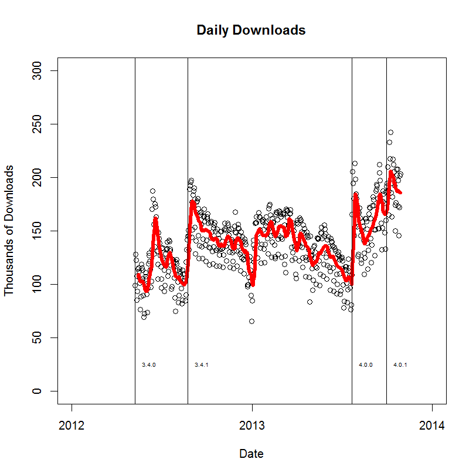
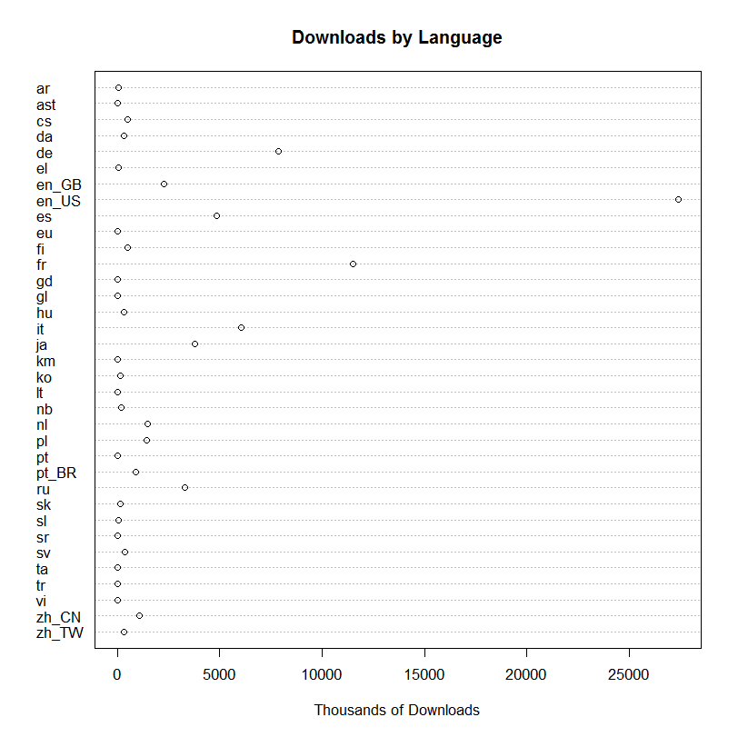
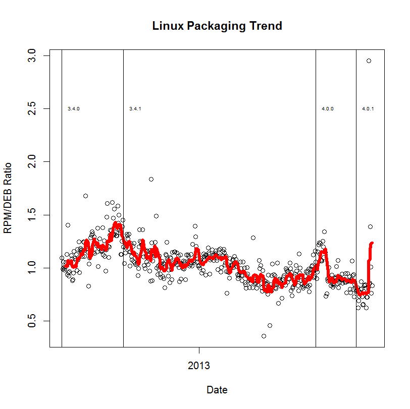
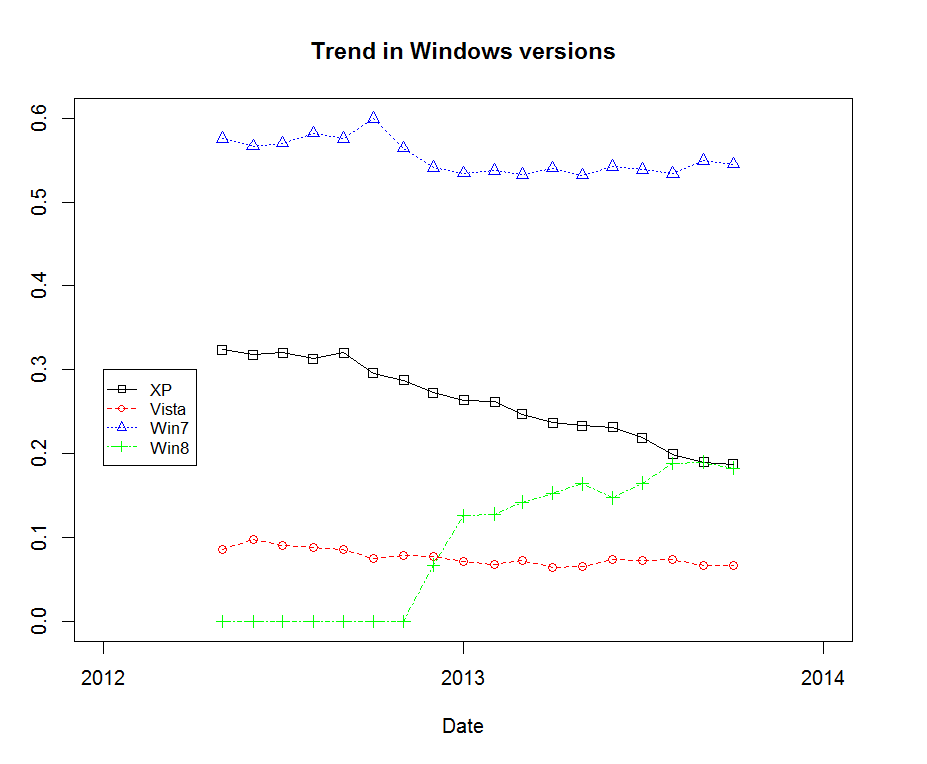
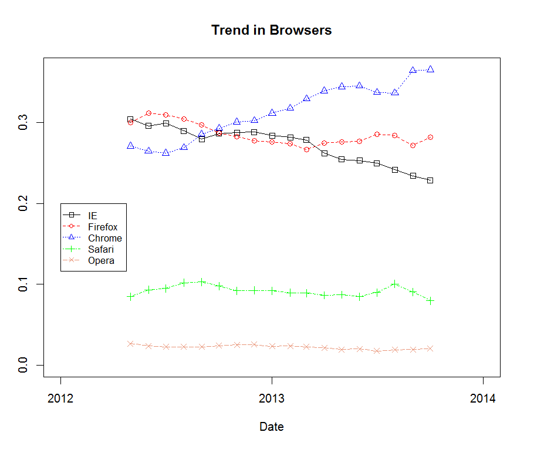

We are pleased to report that yesterday, October 29th, someone downloaded the 75,000,000th copy of Apache OpenOffice™. The 75 million downloads have occurred in the less than 18th months since the first release of Apache OpenOffice on May 8th, 2012.
Apache OpenOffice (formerly called OpenOffice.org) is the leading free and open source office application suite for Windows, Mac and Linux.
Although we're all very busy now with working on our next major release, Apache OpenOffice 4.1, it is worth taking a few minutes to explore some of the trends that can be discerned from our download data. The information we have gathered, relative to desktop OS versions, 64-bit Linux use, etc., may be of special interest to other open source projects to consider in their
planning.
First a scatter plot of daily download numbers, with a 7-day moving average overlay. Each of our releases is marked by a vertical line. You can clearly see the increase in interest since the release of Apache OpenOffice 4.0.

We are able to break down these trends along several other dimensions. One is by country, looking at where the download request came from. This information is gleaned from the IP address of the machine making the request. Since each IP address is part of an assigned block of addresses, and blocks are assigned geographically, we can create a table of downloads by country, territory, etc. We show the full table on our website, of all 238 countries, territories, etc., but here are the top 10:
| #1 | United States | 14,148,707 |
| #2 | France | 9,622,464 |
| #3 | Germany | 7,363,242 |
| #4 | Italy | 6,239,913 |
| #5 | Japan | 3,944,256 |
| #6 | United Kingdom | 3,316,827 |
| #7 | Spain | 2,756,638 |
| #8 | Russia | 2,693,113 |
| #9 | Canada | 2,177,430 |
| #10 | Poland |
1,569,020 |
Another approach is to look at which localized versions of Apache OpenOffice were downloaded. We can see these trends in the following dot chart:

We can also look at the trend over time of downloads by operating system. (Note the log-scale on the Y-axis.) OpenOffice is a mainstream open source desktop application, so the OS distribution reflects overall desktop operating system market shares:

Since we have Linux versions of OpenOffice packed as RPMs (e.g., for RedHat) as well as DEBs (e.g., for Ubuntu), we can look for trends in the ratio of requests for these two packaging formats over time:

Also, we have 32-bit and 64-bit Linux downloads, and we see a gradual increase in demand over time for the 64-bit version, now reaching 50%. (The drop in July-September is not fully explained, but may have been an error in our download page that was not recommending 64-bit downloads appropriately.)

Although we don't have detailed download data for different Windows versions (we have a single download for all Windows users) we do have information from website visitors (nearly 7 million visitors per month) that tells a similar story. Windows 7 remains the most popular Windows version for our users, accounting for over half of Windows visitors. Windows XP ties with Windows 8 for second place, though Windows XP usage is declining quickly.

Looking at the similar data for web browsers, we see the rise in Chrome users among our website visitors:

The above charts were made in R, using data from SourceForge's REST API and from Google Analytics. The processing of the SourceForge data was automated via a custom Python script.